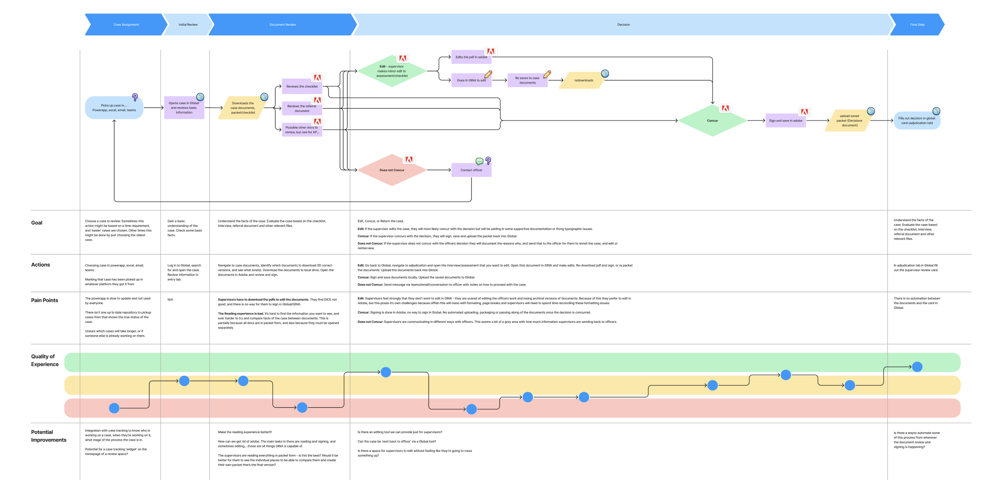
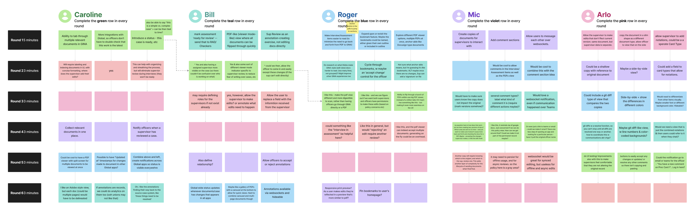

← Work
Case Study
Supervisor Review Mode
Moved the entire supervisor case review workflow from Adobe Acrobat and local desktops into a cloud-based application.

Moved the entire supervisor case review workflow from Adobe Acrobat and local desktops into a cloud-based application.
Each review required downloading documents, editing in Acrobat, saving locally, and manually tracking versions across a desktop filing system. The entire process happened outside the application where cases actually lived.
This created real risk: missed steps, version confusion, and lost files — in a domain where accuracy directly affects asylum and refugee outcomes.
The goal was to bring the full review workflow into the application without disrupting how officers worked around supervisors.




Supervisors were involved at every stage — research, workshops, testing, rollout. When users have shaped a product, they show up for it.
The most useful post-launch signal: "still not perfect, still tasks elsewhere." That quote is now the starting point for the next phase.
What I'd change: a larger usability testing cohort. Four users caught real issues, but edge cases in supervisor workflows only surfaced post-launch.